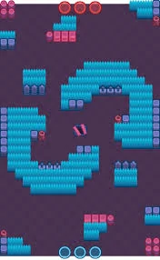
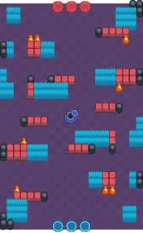
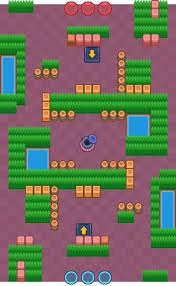

Atrapagemas

Es un modo de juego en el que debes conseguir y mantener durante 15 segundos 10 gemas en tu equipo. Estas aparecerán en el centro del mapa, si mueres pierdes todas las gemas que conseguiste estarán en el lugar donde moriste donde podrán recogerlas tus aliados o tus enemigos.
Consejos
- Controlar el área alrededor de la mina de gemas es importante al principio del juego. Mantén alejados a los Brawlers enemigos mientras tu equipo recoge las gemas a medida que aparecen.
- Si eres parte del equipo con mas gemas durante una cuenta regresiva de 15 segundos, lo más recomendado es retirarte si tienes las gemas o proteger a tus compañeros de equipo que tienen las gemas.
- Colette puede usar su súper para agarrar las gemas y escapar, lo cual es muy útil, especialmente cuando los enemigos están cerca de las gemas.
Mapas



Curiosidades
- Antes, en la beta de Brawl Stars, había un bug que consistía en ganar con 0 gemas:
- Primero teníamos que dejar que salgan las gemas sin que cogieras ni una (ni tú, ni tus aliados ni enemigos) y se buguearia el juego, no había manera de parar esa cuenta atrás y se daría la cuenta atrás al equipo que mas daño hacia.
Historial de cambios
- El 18 de diciembre de 2017:
- Ahora es menos probable que el jugador estelar se otorgue a los jugadores que dejaron caer muchas gemas.
- El 12 de mayo de 2018:
- Los mapas de Atrapagemas ahora son 4 cuadros más anchos.
- El 15 de abril de 2019:
- La mina de gemas ahora genera la segunda gema más tarde.
- El 16 de dicembre de 2020:
- La duración de la partidas se ahora duran 3 minutos y 30 segundos.
- El 16 de junio de 2021:
- Las gemas ahora aparecen en un orden fijo.